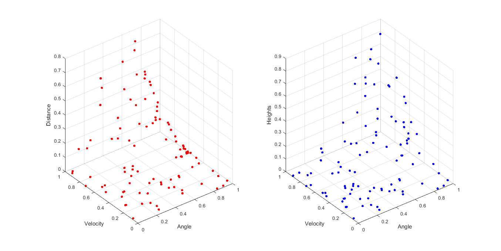
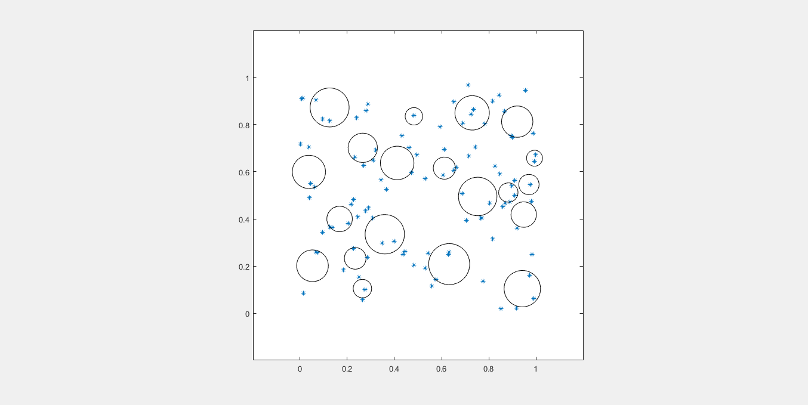
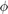
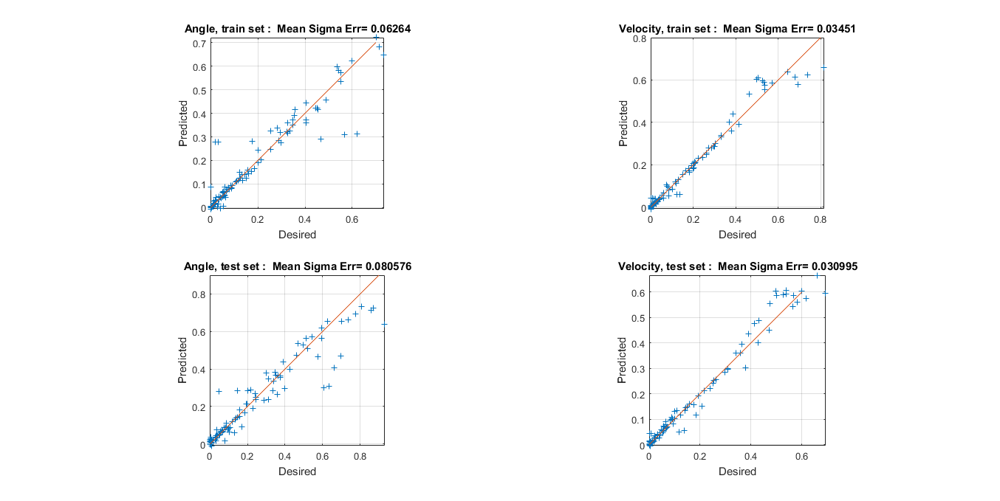
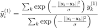
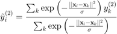
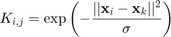
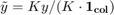
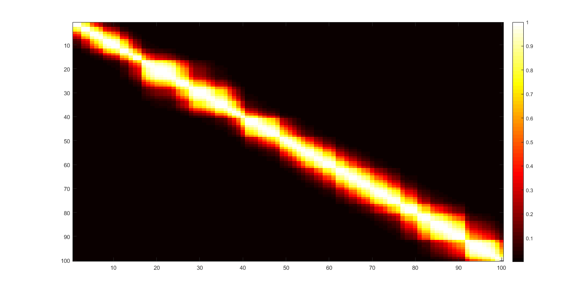
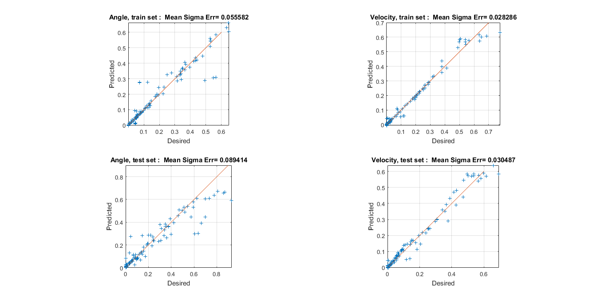

Artificial Neural Networks and other Learning Systems - Lab 2
Contents
6 Function Approximation for Noisy Data
set(0, 'DefaultFigurePosition', get(0,'screensize'));
Setup and Loading
Setup
clear;
rng(3); % 3 or 4 don't lead to a big dead unit
plotinit;
Load data and visualize it: * x(:,1) are angles * x(:,2) are velocities * y(:,1) are distances * y(:,2) are heights
[xtrain, ytrain]=readxy('ballist',2,2); [xtest, ytest]=readxy('balltest',2,2); allx = [xtrain, xtest]; ally = [ytrain, ytest]; figure; subplot(1,2,1); scatter3(allx(:,1), allx(:,2), ally(:,1),200*ones(size(allx(:,1))),'.r'); xlabel('Angle'); ylabel('Velocity'); zlabel('Distance'); subplot(1,2,2); scatter3(allx(:,1), allx(:,2), ally(:,2),200*ones(size(allx(:,1))),'.b'); xlabel('Angle'); ylabel('Velocity'); zlabel('Heights');
Unsupervised Learning of the parameters of the RBF units
Use 20 RBF units and train their centers and spread through unsupervised learning (Expectation-Maximization with single winner)
rng(4); data=xtrain; units=20; vqinit; singlewinner=1; %emiterb f = gcf; filename = './html/part6_em_unsup_learning.gif'; for n = 1:5 emstepb; frame = getframe(f); im = frame2im(frame); [imind,cm] = rgb2ind(im,256); if n == 1; imwrite(imind,cm,filename,'gif','Loopcount',inf); else imwrite(imind,cm,filename,'gif','WriteMode','append'); end end close(f);

Supervised Learning of the second layer weights
The 2D input space gets mapped into a 20D space given by the 20 RBF units. From the RBF layer we want to map to the output, the output is 2D so we need 2 sets of 20 weights each. Here we will train the weight vectors to the 2 output units separately, w1 goes from the 20 RBFs to the output y1
Compute the RBF activations  for all the points in the train set.
Phi=calcPhi(xtrain,m,sigma2);
Extract the two desired output vectors for train and test
d1=ytrain(:,1); d2=ytrain(:,2); dtest1=ytest(:,1); dtest2=ytest(:,2);
Calculate the weight vectors by the pseudo inverse method (batch learning of the weights through min square error method)
w1=Phi\d1; w2=Phi\d2;
Now we can calculate approximations of training data
y1=Phi*w1; y2=Phi*w2;
As well as approximations of test data
Phitest=calcPhi(xtest,m,sigma2); ytest1=Phitest*w1; ytest2=Phitest*w2;
Finally we plot these
figure; subplot(2,2,1); xyplot(d1,y1,'Angle, train set'); grid on; axis('image'); subplot(2,2,2); xyplot(d2,y2,'Velocity, train set'); grid on; axis('image'); subplot(2,2,3); xyplot(dtest1,ytest1,'Angle, test set'); grid on; axis('image'); subplot(2,2,4); xyplot(dtest2,ytest2,'Velocity, test set'); grid on; axis('image');
Visualize on a surface plot the 2D input vs each of the 2 outputs. On the plot are present all the datapoints from train and set.
x1_full= linspace(min(allx(:,1)), max(allx(:,1)), 100); x2_full= linspace(min(allx(:,2)), max(allx(:,2)), 100); [x1_full, x2_full] = meshgrid(x1_full, x2_full); data = [x1_full(:), x2_full(:)]; Phifull=calcPhi(data,m,sigma2); y1_full=Phifull*w1; y2_full=Phifull*w2; figure; ax1 = subplot(1,2,1); hold on; surf(x1_full,x2_full,reshape(y1_full,[100,100]),'LineStyle','none'); scatter3(allx(:,1), allx(:,2), ally(:,1), 200*ones(size(allx(:,1))),'.r'); xlabel('Angle'); ylabel('Velocity'); zlabel('Distance'); colormap jet; alpha(.4); grid on; ax2 = subplot(1,2,2); hold on; surf(x1_full,x2_full,reshape(y2_full,[100,100]),'LineStyle','none'); scatter3(allx(:,1), allx(:,2), ally(:,2),200*ones(size(allx(:,1))),'.b'); xlabel('Angle'); ylabel('Velocity'); zlabel('Height'); colormap jet; alpha(.4); grid on; f = gcf; filename = './html/part6_surf_result.gif'; for view_angle = -90:3:270 view(ax1, view_angle, 30); view(ax2, view_angle, 30); frame = getframe(f); im = frame2im(frame); [imind,cm] = rgb2ind(im,256); if view_angle == -90; imwrite(imind,cm,filename,'gif','Loopcount',inf, 'DelayTime',0); else imwrite(imind,cm,filename,'gif','WriteMode','append','DelayTime',0.06); end end close(f);

6 Bonus - Smoothing with Gaussian kernel
Smoothing with a Gaussian kernel can be done like this: * for every point cast a gaussian cloack centered on the point * set that point to be the weighted average of all the points, computed using the value of the gaussian at their position


In matrix form, using pointwise division:


sigma = 0.008;
Sorting the points just to plot the gram matrix:
figure; K = exp(-squareform(pdist(sort(xtrain), 'squaredeuclidean')./sigma)); colormap('hot'); axis('image') imagesc(K); colorbar;
Actual useful gram matrix
K = exp(-squareform(pdist(xtrain, 'squaredeuclidean')./sigma));
ytrain_smooth = K*ytrain ./ [sum(K, 2), sum(K, 2)];
Plotting ytrain vs ytrain smoothed
figure; ax1 = subplot(1,2,1); hold on; scatter3(xtrain(:,1), xtrain(:,2), ytrain(:,1), 200*ones(size(allx(:,1))),'.r'); xlabel('Angle'); ylabel('Velocity'); zlabel('Distance'); scatter3(xtrain(:,1), xtrain(:,2), ytrain_smooth(:,1), 200*ones(size(allx(:,1))),'.b'); xlabel('Angle'); ylabel('Velocity'); zlabel('Height'); grid on; title('Original in red, smoothed in blue') ax2 = subplot(1,2,2); hold on; scatter3(xtrain(:,1), xtrain(:,2), ytrain(:,1), 200*ones(size(allx(:,1))),'.r'); xlabel('Angle'); ylabel('Velocity'); zlabel('Distance'); scatter3(xtrain(:,1), xtrain(:,2), ytrain_smooth(:,1), 200*ones(size(allx(:,1))),'.b'); xlabel('Angle'); ylabel('Velocity'); zlabel('Height'); grid on; f = gcf; filename = './html/part6_smooth_scatter_result.gif'; for view_angle = -90:3:270 view(ax1, view_angle, 10); view(ax2, view_angle, 10); frame = getframe(f); im = frame2im(frame); [imind,cm] = rgb2ind(im,256); if view_angle == -90; imwrite(imind,cm,filename,'gif','Loopcount',inf, 'DelayTime',0); else imwrite(imind,cm,filename,'gif','WriteMode','append','DelayTime',0.06); end end close(f);

Plotting surfaces from ytrain vs ytrain smoothed
figure; % non smoothed y1 ax1 = subplot(1,2,1); hold on; x1_full= linspace(min(xtrain(:,1)), max(xtrain(:,1)), 100); x2_full= linspace(min(xtrain(:,2)), max(xtrain(:,2)), 100); [x1_full_mesh, x2_full_mesh] = meshgrid(x1_full, x2_full); z_train = griddata(xtrain(:,1), xtrain(:,2), ytrain(:,1) ,x1_full_mesh, x2_full_mesh); scatter3(xtrain(:,1),xtrain(:,2),ytrain(:,1),200*ones(size(xtrain(:,1))),'.r'); surf(x1_full_mesh,x2_full_mesh,z_train, 'EdgeColor','red','EdgeAlpha',0.4,'FaceColor','red'); alpha(0.4); % smoothed y1 x1_full= linspace(min(xtrain(:,1)), max(xtrain(:,1)), 100); x2_full= linspace(min(xtrain(:,2)), max(xtrain(:,2)), 100); [x1_full_mesh, x2_full_mesh] = meshgrid(x1_full, x2_full); z_train = griddata(xtrain(:,1), xtrain(:,2), ytrain_smooth(:,1) ,x1_full_mesh, x2_full_mesh); scatter3(xtrain(:,1),xtrain(:,2),ytrain_smooth(:,1),200*ones(size(xtrain(:,1))),'.b'); surf(x1_full_mesh,x2_full_mesh,z_train, 'EdgeColor','blue','EdgeAlpha',0.4,'FaceColor','blue'); alpha(0.4); grid on; xlabel('Angle'); ylabel('Velocity'); zlabel('Distance'); title('Original in red, smoothed in blue') % non smoothed y2 ax2 = subplot(1,2,2); hold on; x1_full= linspace(min(xtrain(:,1)), max(xtrain(:,1)), 100); x2_full= linspace(min(xtrain(:,2)), max(xtrain(:,2)), 100); [x1_full_mesh, x2_full_mesh] = meshgrid(x1_full, x2_full); z_train = griddata(xtrain(:,1), xtrain(:,2), ytrain(:,2) ,x1_full_mesh, x2_full_mesh); scatter3(xtrain(:,1),xtrain(:,2),ytrain(:,2),200*ones(size(xtrain(:,1))),'.r'); surf(x1_full_mesh,x2_full_mesh,z_train, 'EdgeColor','red','EdgeAlpha',0.4,'FaceColor','red'); alpha(0.4); % smoothed y2 x1_full= linspace(min(xtrain(:,1)), max(xtrain(:,1)), 100); x2_full= linspace(min(xtrain(:,2)), max(xtrain(:,2)), 100); [x1_full_mesh, x2_full_mesh] = meshgrid(x1_full, x2_full); z_train = griddata(xtrain(:,1), xtrain(:,2), ytrain_smooth(:,2) ,x1_full_mesh, x2_full_mesh); scatter3(xtrain(:,1),xtrain(:,2),ytrain_smooth(:,2),200*ones(size(xtrain(:,1))),'.b'); surf(x1_full_mesh,x2_full_mesh,z_train, 'EdgeColor','blue','EdgeAlpha',0.4,'FaceColor','blue'); alpha(0.4); grid on; xlabel('Angle'); ylabel('Velocity'); zlabel('Height'); f = gcf; filename = './html/part6_smooth_surf_result.gif'; for view_angle = -90:3:270 view(ax1, view_angle, 10); view(ax2, view_angle, 10); frame = getframe(f); im = frame2im(frame); [imind,cm] = rgb2ind(im,256); if view_angle == -90; imwrite(imind,cm,filename,'gif','Loopcount',inf, 'DelayTime',0); else imwrite(imind,cm,filename,'gif','WriteMode','append','DelayTime',0.06); end end close(f);

The unsupervised part remains the same. Just need to do supervised learning on the smoothed data.
Compute the RBF activations for all the points in the train set.
Phi=calcPhi(xtrain,m,sigma2);
Extract the two desired output vectors for train and test
d1=ytrain_smooth(:,1); d2=ytrain_smooth(:,2); dtest1=ytest(:,1); dtest2=ytest(:,2);
Calculate the weight vectors by the pseudo inverse method (batch learning of the weights through min square error method)
w1=Phi\d1; w2=Phi\d2;
Now we can calculate approximations of training data
y1=Phi*w1; y2=Phi*w2;
As well as approximations of test data
Phitest=calcPhi(xtest,m,sigma2); ytest1=Phitest*w1; ytest2=Phitest*w2;
Finally we plot these
figure; subplot(2,2,1); xyplot(d1,y1,'Angle, train set'); grid on; axis('image'); subplot(2,2,2); xyplot(d2,y2,'Velocity, train set'); grid on; axis('image'); subplot(2,2,3); xyplot(dtest1,ytest1,'Angle, test set'); grid on; axis('image'); subplot(2,2,4); xyplot(dtest2,ytest2,'Velocity, test set'); grid on; axis('image');
Visualize on a surface plot the 2D input vs each of the 2 outputs. On the plot are present all the datapoints from train and set.
x1_full= linspace(min(allx(:,1)), max(allx(:,1)), 100); x2_full= linspace(min(allx(:,2)), max(allx(:,2)), 100); [x1_full, x2_full] = meshgrid(x1_full, x2_full); data = [x1_full(:), x2_full(:)]; Phifull=calcPhi(data,m,sigma2); y1_full=Phifull*w1; y2_full=Phifull*w2; figure; ax1 = subplot(1,2,1); hold on; surf(x1_full,x2_full,reshape(y1_full,[100,100]),'LineStyle','none'); scatter3(allx(:,1), allx(:,2), ally(:,1), 200*ones(size(allx(:,1))),'.r'); xlabel('Angle'); ylabel('Velocity'); zlabel('Distance'); colormap jet; alpha(.4); grid on; ax2 = subplot(1,2,2); hold on; surf(x1_full,x2_full,reshape(y2_full,[100,100]),'LineStyle','none'); scatter3(allx(:,1), allx(:,2), ally(:,2),200*ones(size(allx(:,1))),'.b'); xlabel('Angle'); ylabel('Velocity'); zlabel('Height'); colormap jet; alpha(.4); grid on; f = gcf; filename = './html/part6_smooth_vs_nonsmooth_surf_result.gif'; for view_angle = -90:3:270 view(ax1, view_angle, 30); view(ax2, view_angle, 30); frame = getframe(f); im = frame2im(frame); [imind,cm] = rgb2ind(im,256); if view_angle == -90; imwrite(imind,cm,filename,'gif','Loopcount',inf, 'DelayTime',0); else imwrite(imind,cm,filename,'gif','WriteMode','append','DelayTime',0.06); end end close(f);

close all;